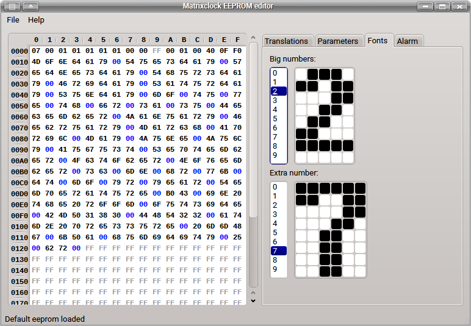

This project is a simple LED matrix clock. It can use either MAX7219 as LED drivers (one IC per matrix)
either HT1632 LED driver. It's possible to use 3 or 4 matrixes, but recent code is more suitable for second option.
Main features:
RTC DS1307 support (DS3231 also works)
One alarm which can be enabled for any day of week
Active beeper is used for alarm and signals
Temperature measurement with DS18B20 sensors
Pressure/temperature measurement with BMP180 sensor
Humidity/temperature measurement with DHT22 sensor
Scrolling date and sensors data strings
Reducing brigtness in darkness
Supported LED drivers:
MAX7219 (one per LED matrix). Pinout and schematic are here
HT1632 (one for 4 matrixes). Pinout for JY-MCU 3208CLOCK PRO module
Matrixclock EEPROM editor
While project uses various parameters from EEPROM memory special desktop application to edit eeprom
matrixclock_xx.bin was designed. It allows to load, modify and save eeprom binary file in easy way.

Matrixclock editor is written on Qt5 and it's sources are availiable on
Github.
{kind=link}